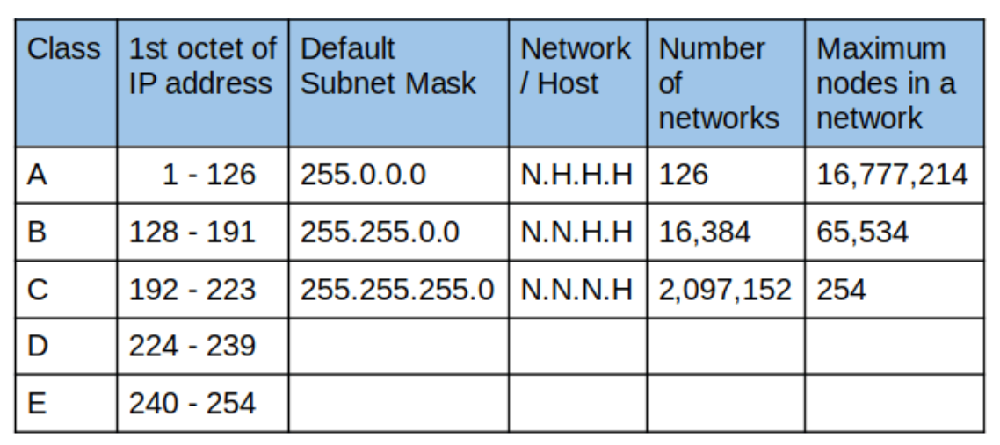

1.3 IPv4 Addressing
Reminder: The Network Layer (Layer 3)
- Provides connectivity between end hosts on different networks (outside of the LAN).
- Provides logical addressing (IP addresses).
- Provides Path Selection between source and destination.
- Routers operate here.
Routers
- Routers separate networks, each switch connected to a different router interface is on a different LAN.
- Each interface of the router is assigned its own IP address.
- Unlike switches, routers do not broadcast packets. They need to know where to route them otherwise they'd drop them.
IP Addresses
IPv4 addresses are made up of 4 octets, each octet being 8 bits represented in decimal (to make it easier for us to read). And therefore each octet can hold a value between 0 and 255 in decimal, which is from 00000000 to 11111111 in binary.
Subnets
/24 for example means that the first 24 bits (3 octets) represent the Network Portion of the IP address, and the last octet represents the Host Portion.- The network portion would be the same for all the devices on one subnet, and the host portion can change.
- For the notation
192.168.0.0/24 for example, all devices in the range of 192.168.0.1 to 192.168.0.255 are on the same subnet.
- The first IP address in the subnet is referred to as the default gateway or the network address, and it would be assigned to the router. In this case it would be
192.168.0.1.
- The last IP address in the subnet is the broadcast address, it indicates that the packet should be forwarded to all the devices on the subnet. In this case it’s
192.168.0.255.
IPv4 addresses are split up into 5 different classes:
Note that the class is determined by the first octet.

- Addresses in class D are Multicast addresses.
- Addresses in class E are reserved for experimental purposes.
- In each class, some of the IP addresses are reserved for private IP addresses.
- Address range of 127.0.0.0 - 127.255.255.255 are Loopback addresses.
A Loopback Address simply means that anything sent to an address in the 127.0.0.0/8 range will be processed by the device itself as if it was received from another device.
- The 255.0.0.0 Subnet Mask can also be denoted as /8, 255.255.0.0 is /16 and 255.255.255.0 is /24.
Terminology
The Network Portion is the portion in the IP address that corresponds to where it is a 1 in the subnet mask. The network portion defines the subnet and it would be the same for all devices connected to it.
192.168.0.1/24 has the subnet mask of 255.255.255.0
and 255.255.255.0 in binary is 11111111.11111111.11111111.00000000
So therefore, the Network Portion of this IP address is “192.168.0” (keep the octets where its a 1)
The Host Portion is the portion in the IP address that corresponds to where it is a 0 in the subnet mask. These are assigned to individual hosts, and they determine the size of the subnet.
192.168.0.1/24 is a subnet where a device can be assigned the values between 192.168.0.1 to 192.168.0.255.
Here, we can change both the forth octet to get new hosts.
The first usable address is one above the first address (the network address is the first actual address).
Eg: 192.168.0.1
If the Host portion of the address is all 1's = Broadcast Address.
Eg: 192.168.1.255
The last usable address is one below the last address.
Eg: 192.168.1.254
If the destination IP address is a broadcast address, the destination MAC address would also be broadcast (FFFF.FFFF.FFFF).
Previous
Next